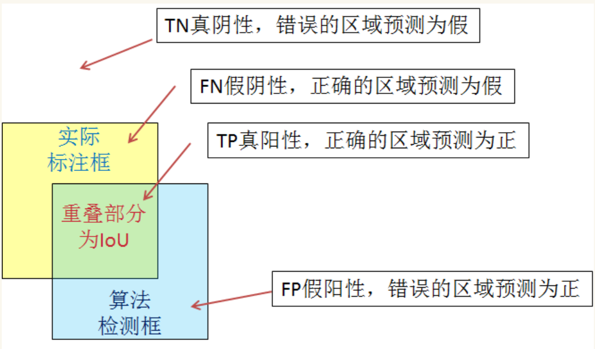
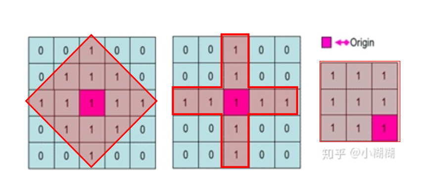
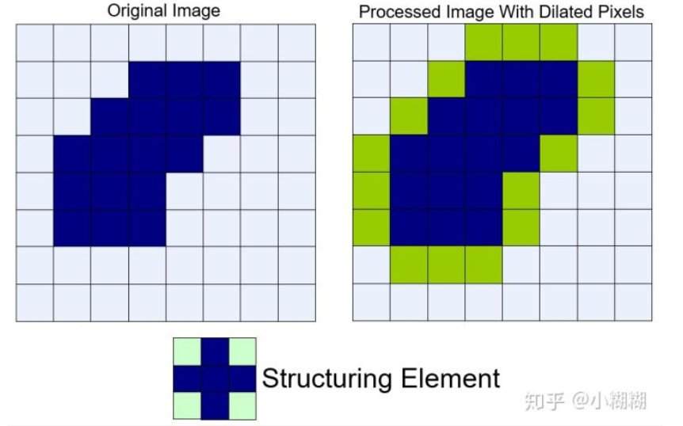

1. 基本概念
1.1. 图像
1.1.1. 像素
像素是指由图像的小方格组成的，这些小方块都有一个明确的位置和被分配的色彩数值，小方格颜色和位置就决定该图像所呈现出来的样子。
我们来读取一张形状为 400×500 （高和宽分别为400像素和500像素）的图像作为实
1.1.2. 亮度
图象亮度：一副图像给人的一种直观感受，如果是灰度图像，则跟灰度值有关，灰度值越高则图像越亮。
1.1.3. 对比度
对比度指的是一幅图像中明暗区域最亮的白和最暗的黑之间不同亮度层级的测量，差异范围越大代表对比越大，差异范围越小代表对比越小.
好的对比率120:1就可容易地显示生动、丰富的色彩，当对比率高达300:1时，便可支持各阶的颜色。
1.1.4. 饱和度
图象饱和度：彩色图像的概念，饱和度为0的话，图像表现为灰度图像；饱和度越高颜色表现出种类越多，颜色表现更丰富，反之亦然。
1.2. 视频
1.2.1. 帧数
FPS （每秒传输帧数(Frames Per Second)）
电影以每秒24张画面的速度播放，也就是一秒钟内在屏幕上连续投射出24张静止画面。有关动画播放速度的单位是fps
2. 数字图像与颜色空间
数字图像指的是现在的图像都是以二维数字表示，每个像素的灰度值均由一个数字表示，范围为0-255(2^8)
-
二值图像(Binary Image)：图像中每个像素的灰度值仅可取0或1，即不是取黑，就是取白，二值图像可理解为黑白图像 -
灰度图像(Gray Scale Image)：图像中每个像素可以由0-255的灰度值表示，具体表现为从全黑到全白中间有255个介于中间的灰色值可以取 -
彩色图像(Color Image)：每幅图像是由三幅灰度图像组合而成，依次表示红绿蓝三通道的灰度值，即我们熟知的RGB，此时彩色图像要视为三维的[height，width, 3]
下面用一张图来感受一下灰度图与彩色图像之间的联系与差别

2.1. RGB 颜色空间基本概念
RGB颜色空间基于颜色的加法混色原理，从黑色不断叠加红、绿、蓝的颜色，最终可以得到白色光。
RGB颜色空间的图像具有三种颜色通道：红色，绿色和蓝色（RGB），可在像素中产生颜色。
2.2. RBG通道直方图
直方图，是一种对数据分布情况的图形表示，也就是一种二维的统计图表（统计学的概念）。
在图像领域里，我们选取的坐标一般是统计样本（图像、视频帧）和样本的某种属性（亮度、像素值、梯度、方向、色彩等等任何特征）。
图像的直方图是用来表现图像中亮度分布的直方图，给出的是图像中某个亮度或者某个范围亮度下共有几个像素。

可以看到，红色通道直方图的凸起主要集中在右边，这说明在很多像素中的 R值都是非常大的，也就意味着红色的发光强度大；而红色通道直方图最左端没有凸起，这意味着没有任何一个像素中的 R 值为0，也就意味着在所有像素中红色都发光了。而绿色通道直方图和蓝色通道直方图的凸起都集中在左边，这也就意味着所有的 G 值和 B 都是较小的，因此绿色和蓝色的发光强度弱，所以最后画面呈现出较强的红色。
2.2.1. 直方图的均衡化
直方图均衡化是通过拉伸像素强度的分布范围，使得在0~255灰阶上的分布更加均衡，提高了图像的对比度，达到改善图像主观视觉效果的目的。对比度较低的图像适合使用直方图均衡化方法来增强图像细节。
HSV颜色模型
这个模型中颜色的参数分别是：色调（H），饱和度（S），明度（V）。
RGB和 CMY颜色模型都是面向硬件的，而HSV（Hue Saturation Value）颜色模型是面向用户的。
2.3. 图像解压
OpenCV使用JPEG图像的整数精确解压缩而引起的。相反，TensorFlow使用离散余弦变换作为默认值。这种类型的解码不准确，因此要使其与OpenCV相同，我们需要使用整数精确解压缩对其进行解码。可以通过设置参数dct_method ='INTEGER_ACCURATE'来完成，如下所示
image_tf = tf.io.read_file（image_path） image_tf = tf.image.decode_jpeg（image_tf，channel = 3，dct_method ='INTEGER_ACCURATE'） 与tf.Session（）sess： image_tf = image_tf.eval（） plt_display（image_tf，'TF_INT_ACC'）
3. 数据增强
图像增广（image augmentation）是数据增强在图像上说明，图像增广技术通过对训练图像做一系列随机改变，来产生相似但又不同的训练样本，从而扩大训练数据集的规模。
图像增广的另一种解释是，随机改变训练样本可以降低模型对某些属性的依赖，从而提高模型的泛化能力。
4. 模型指标
4.1. 又好（准确性）

4.1.1. IOU

4.1.2. 精度

4.1.3. 召回

4.1.4. PR：精度-召回率曲线
Precision-RecallPrecision−Recall 曲线
这条曲线的两个变量程负相关，精度越高，召回率越低；召回率越高，精度越低。
如果将所有对象都预测为正类，没有被错误预测成负类的正类（FN为0）那么召回率将为100%；如果将所有对象的预测都为负，没有被错误预测成正的样本，那么精度就将为100%,这两个指标间存在着此消彼长的关系，理想的曲线是向右上方凸出的、包围面积大的曲线。
4.1.5. AP 平均精度
AP均匀精度Average Precision：PR曲线下所围成的面积，面积越大越好；这里的average指的是针对不同recall的平均精度。
4.1.6. mAP 均值平均精度
均值平均精度（Mean Average Precision, mAP）
4.2. 又快（实时性）
4.2.1. 每秒处理帧数
每秒处理帧数（Frame per seconds,fps）
5. 形态学图像处理
形态学图像处理（简称形态学）是指一系列处理图像形状特征的图像处理技术。
形态学的基本思想是利用一种特殊的结构元来测量或提取输入图像中相应的形状或特征，以便进一步进行图像分析和目标识别。
形态学方法的基础是集合论。
形态学方法由J. Serra 于1964年提出。
形态学最基本的操作是腐蚀和膨胀。
形态学操作的使用需要先定义：
1. 一个结构元(Structuring Elements，SE)
2. 指定结构元的原点
不做特殊说明，输入图像为二值图像。图像中1是前景，0是背景。
5.1. 结构元
结构元（Structuring Elements，SE）可以是任意形状、任意大小，SE中的的值可以是0或1。常见的结构元有:
1. 矩形
2. 十字形
3. 椭圆形
结构元的原点(锚点)O可以是任意位置，一般定义为结构元的中心。
如下图所示，红色区域是几个不同形状的结构元，紫红色区域为锚点O。

5.2. 膨胀
膨胀（Dilation），就是将结构元$s$ 在图像 $f$ 上滑动，把结构元锚点位置的图像像素点的灰度值设置为结构元值为1的区域对应图像区域像素的最大值。用公式表示如下:
$$dst(x,y)=\max(src(x+x^{'},y+y^{'}))$$
其中element为结构元，(x,y)为锚点O的位置，x'和y'为结构元值为1的像素相对锚点O的位置偏移，src表示原图，dst表示结果图。

5.3. 腐蚀
$$dst(x,y)=\min(src(x+x^{'},y+y^{'})) $$

相比腐蚀和膨胀，基于他们的组合操作在图像处理中的应用更为广泛，常见的组合方式有：
1. 开运算
2. 闭运算。
开操作对图片先腐蚀再膨胀，可以将图片中细小的连接结构断开；
闭操作对图片先膨胀再腐蚀，可以将断裂的物体重新连成一个整体。
通过基本形态学操作的组合和多种集合关系的应用，可以实现：边界提取、孔洞填充、连通分量提取、计算区域的凸壳、细化、粗化、提取骨架和裁剪等复杂功能。1
5.4. 开运算
开运算（Opening）：先腐蚀再膨胀
# 开运算 kernel = np.ones((23, 23), np.uint8) opened = cv2.morphologyEx(blurred, cv2.MORPH_OPEN, kernel) # cv2.imshow('opened',opened) opened = cv2.addWeighted(blurred, 1, opened, -1, 0)
关于图像融合的线性方法即使用addweighted函数进行图像融合，其核心是ROI感兴趣区域的定义，ROI区域在opencv中就是矩形区域(RECT)
# 得到一个5x5的矩形结构元 kernel = cv2.getStructuringElement(cv2.MORPH_RECT,(5,5)) iterations = 10 # 执行开闭运算的次数 open_res = cv2.morphologyEx(img, cv2.MORPH_OPEN, kernel, iterations)

5.5. 闭运算
闭运算（Closing）： 先膨胀再腐蚀
kernel = cv2.getStructuringElement(cv2.MORPH_RECT,(5,5)) iterations = 10 # 执行闭操作的次数 close_res = cv2.morphologyEx(img, cv2.MORPH_CLOSE, kernel, iterations)

5.6. 白色顶帽变换
白色顶帽变换（white top-hat）是原图像与开运算结果图之差，用公式表示为：
$$T_w(f)=f-fs$$
$$T_w(f)=原始图片-开运算图$$
白色顶帽变换变换可以得到图像中那些面积小于结构元且比周围亮的区域，示意图如下：

5.7. 黑色顶帽变换
黑色顶帽变换（blacktop-hat）是闭运算结果图与原图之差，用公式表示为：
$$T_w(f)=fs-f$$
$$T_w(f)=闭运算图-原始图片$$
黑色顶帽变换可以得到图像中那些面积小于结构元且比周围暗的区域。

6. 边缘检测
6.1. 边缘是什么？
边缘就是灰度值变化较大的的像素点的集合。一道黑边一道白边中间就是边缘，它的灰度值变化是最大的，在图像中，用梯度来表示灰度值的变化程度和方向。
由于图像中不可避免的存在噪声和模糊，边缘检测往往与滤波操作结合使用。边缘检测可以通过计算图片中像素点的一阶导数或者二阶导数实现。
边缘检测本质上就是一种滤波算法，区别在于滤波器的选择，滤波的规则是完全一致的。
6.2. 基本步骤
边缘检测的一般步骤：
1. 滤波——消除噪声
2. 增强——使边界轮廓更加明显
3. 检测——选出边缘点
图像的滤波一般是基于灰度图进行的。
边缘检测是基于灰度突变实现图像分割最常用的方法，根据灰度剖面分类，边缘模型有:
1. 台阶模型
2. 斜坡模型
3. 屋顶边缘模型
6.3. 高级算法
6.3.1. Canny
Canny边缘检测是一种流行的边缘检测算法。它是由约翰坎尼在1986年开发的。这是一个多阶段的算法。其目标是找到一个最优的边缘，其最优边缘的定义是：
1. 好的检测 --算法能够尽可能多地标示出图像中的实际边缘
2. 好的定位 --标识出的边缘要与实际图像中的实际边缘尽可能接近
3. 最小响应 --图像中的边缘只能标识一次，并且可能存在的图像噪声不应该标识为边缘
步骤：
1. Noise Reduction
2. Finding Intensity Gradient of the Image
3. Non-Maximun Suppression
4. Double Threhold
5. Edge tracking by hysteresis
6.3.1.1. 降噪
图片中的高频信息指颜色快速变化，低频信息指颜色平缓的变化。边缘检测过程中需要检测的图片边缘属于高频信息。而图片中噪声部分也属于高频信息，因此我们需要对图像进行去噪处理。
常用的是使用5*5的高斯滤波核来平滑图像，滤波核的数量呈高斯分布。
6.3.1.2. 找出梯度较大的区域
计算像素梯度的幅值以及方向，常用的算子有Rober，sobel，计算水平及垂直方向的差分。找出梯度较大的区域，这部分区域属于图像增强的区域，此时得到的边缘信息比较粗大。
6.3.1.3. 非极大值抑制
非极大值抑制属于一种边缘细化的方法，梯度大的位置有可能为边缘，在这些位置沿着梯度方向，找到像素点的局部最大值，并将非最大值抑制。
6.3.1.4. 双阀值
由于存在很多伪边缘，因此Canny算法中所采用的算法为双阈值法，具体思路为选取两个阈值，将小于低阈值的点认为是假边缘置0，将大于高阈值的点认为是强边缘置1，介于中间的像素点需进行进一步的检查。
双阀值方法，设置一个maxval，以及一个minval，梯度大于maxval则为强边缘，梯度值介于maxval与minval则为弱边缘点，小于minval为抑制点。
6.3.1.5. 滞后边缘追踪
滞后边缘追踪，主要处理梯度值位于maxval，minval中的一些像素点。由于边缘是连续的，因此可以认为弱边缘如果为真实边缘则和强边缘是联通的，可由此判断其是否为真实边缘。